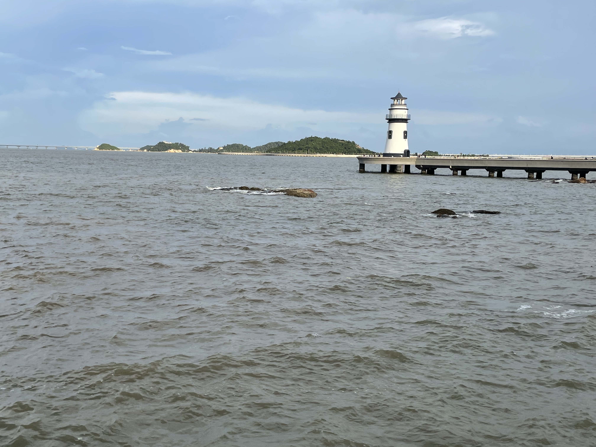
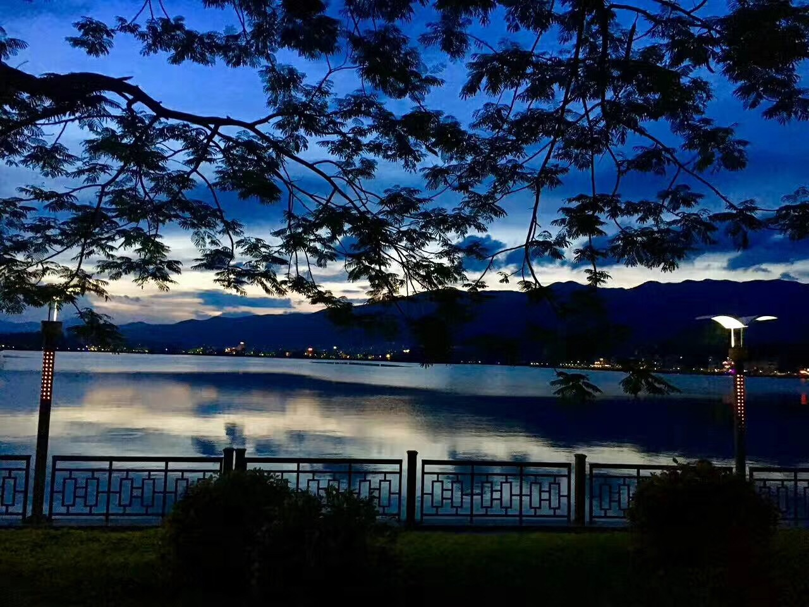
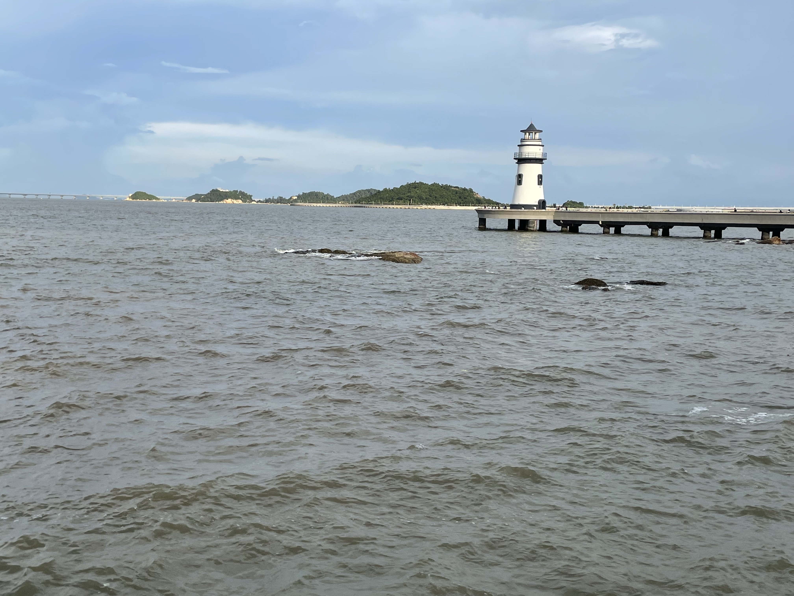
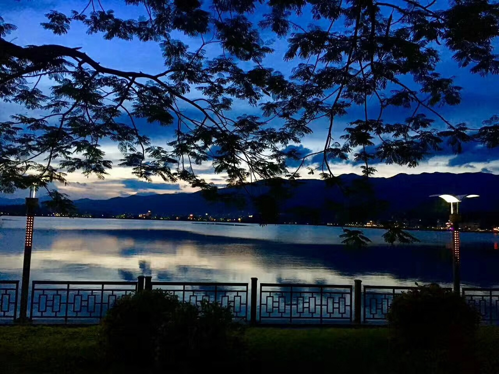

There is a famous coastal city in north China, where foreigners worldwide make the town vibrant. There are hundreds of western-style restaurants. The food is also excellent, and I recorded them with my camera.
We have the chance to sit in the restaurants next to the beach and listen to music from different countries. The food is beautiful, and the wind is comfortable. People come here to meet their family and friends, read a book or swim in the sea. After one year, the restaurants were shut down because of the pandemic, which is a different scene.